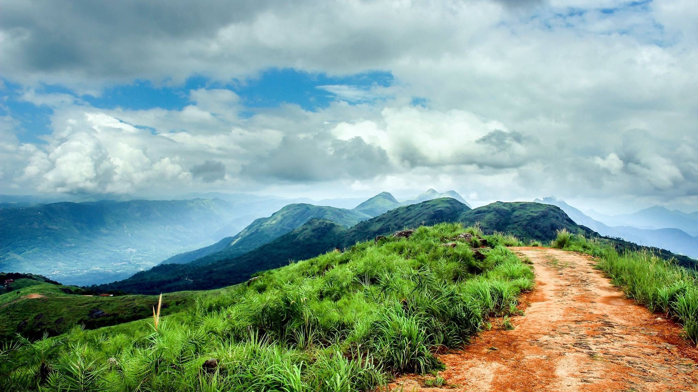

Idukki District came into existence on the 26th January, 1972 as per the notification No. 54131/C2/71/RD dated the 24th January, 1972, carving out Devikulam, Udumbanchola and Peerumade Taluks from erstwhile Kottayam District and Thodupuzha Taluk (excluding Kalloorkad Village and portion of Manjalloor Village included in Kalloorkad and Manjalloor Panchayats) of erstwhile Ernakulam District. The jurisdiction was slightly altered by a subsequent notification No.7754/C2/72/RD dated the 14th February, 1972. The name Idukki was derived from the word ‘Idukku’ which means a gorge. As per G.O.(MS)/No.1026/82/RD dated 29.10.1982, North Pamba Valley area and the area around Sabarimala Sannidhanam in Mlappara Village of Peerumade Taluk were transferred to Pathanamthitta District. At present, the District consists of 5 Taluks viz., Devikulam, Udumbanchola, Thodupuzha, Peerumade and Idukki.
Idukki Arch Dam, an engineering marvel, is located in the South-Indian state of Kerala. It is an arch dam with a double curvature and is built on River Periyar. Precisely, the dam is constructed in a gorge between two hills, Kuravathi and Kuravan. It is at the height of about 550 feet and is a breathtaking sight in the otherwise rugged terrain along which has been built.
Ilaveezha Poonchira, the Shangri-La of Kerala, situated in Melukavu village in Kottayam district is one of the places to visit in Idukki. Located at the foothills of the 3 floral hillocks – Mankunnu, Kudayathur, and Thonippara Hills at Kanjar, the bewitching valley is spread across thousands of acres. “Ila-veezha Poonchira” which means “the pond of flowers where the leaves do not fall” has its roots in Mahabharata. The rains during the monsoon season transmogrify the valley and present an enthralling and hypnotic effect on the visitors. Words fall short to explain the beatitudes of the play of colors on the horizon during the Sunrise and Sunset. Ilaveezha Poonchira is also an ideal destination for trekking.
Vandanmedu is located 25 km north of Kumily, on the Thekkady-Munnar Highway. The place is famous for rich spices like cardamom and it is said to be the biggest auction centers for Cardamom. The visitors traversing the plantations can enjoy the aroma of cardamom wafting through the air. The place is also a budding commercial center and is known for its historic colonial-era buildings. The anchel office constructed in the early 20th century by the British housed the first post office in Idukki.
Thommankuthu Waterfalls is a series of 12 falls or kuthus (locally known) spread over an area of 5 kms and fall from a height of 40 meters. The 12 falls that vary in height and pass through the lush evergreen forests, presents a remarkable sight. The waterfall is eponymous of its founder, Thommachan Kuruvinakunnel, who introduced this beautiful falls to the world. The rich flora and fauna around the waterfall hypnotize the visitors. It is an alluring destination for trekking as it takes you through caves and sleepy hamlets of the tribals.The visitors can enjoy a bath at the falls in summer, but not during the monsoon as the level of water increases.
Ramakkalmedu, situated 3500 ft above the sea level, presents a bird’s eye view of the countryside of the neighboring Tamil Nadu State. The striking feature of the Ramakkalmedu is the historical monument of Kuravan and Kurathi, a huge statue that illustrates the Sangam period of Kerala. Rama-Kal-medu literally means “Land of Rama’s stone” or “ Land where Lord Rama set his holy foot”. Another unique feature of Ramakkalmedu is the prevailing wind conditions, irrespective of the seasons. It offers excellent trekking options to adventure enthusiasts. Other attractions include Frog-rock, Turtle –Rock etc.
Kulamavu Dam, one of the triumvirate dams of the Idukki reservoir project, is constructed in 1961 to restrict the flow of water into Kallivally rivulet. The 100 ft gravity dam built of concrete or stone masonry on the Periyar River stretches out between rocky mountains and forms 33 sq.km reservoir. Kulamavu, one of the places to visit in Idukki, is also a famous hill station in Idukki district. The 60 sq. km artificial lake formed as a result of the construction of the 3 dams, add scenic beauty to the rugged rocky terrain and verdant vegetation around it. The hill station charms the visitors with the picturesque countryside, rubber and spice plantations. The visitors go gaga over the various species of birds such as darter or snakebird, kingfisher etc. that inhabit the hill station. Kaulamavu offers remarkable trekking trails with equally enchanting environs that kick the adrenalin of hiking or trekking fanatics.
Mangala Devi temple is a historic temple situated in the dense forests of Periyar Tiger Reserve in the Idukki district of Kerala bordering Tamil Nadu State. The fable prevalent among the natives elucidates that Kannagi, a devout Tamil woman, had wreaked destruction on the Pandyan dynasty through her curse for unjustly executing her husband, Kovalan in a theft case. Kannagi is extolled as the epitome of chastity and is bestowed the position of the goddess. The ancient Tamilakam King, Chera Chenguttuvan, constructed this temple, around 2000 yrs ago. So, the temple is known for Pandiyan architecture. Apart from Mangala Devi, the idols of Lord Shiva, Lord Karuppuswamy and sanctorium of Ganesh adorn the temple.Only during Chitrapournami festival, which falls in the Summer season (April/May), the devotees can visit and offer the prayers. The 12 km stretch to the temple can be accessed only through Jeep.To visit the Mangala Devi during other times prior special permission must be sought from the forest ranger.